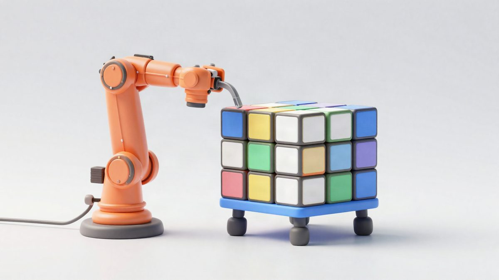
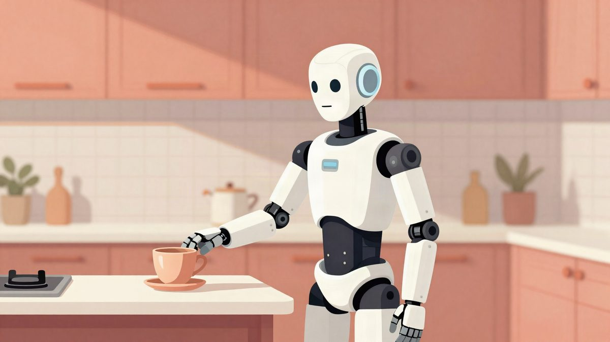

ETH Zürich pokazao robota ANYmal-D koji nogama rješava veliki Rubikov kocku

ETH Zürich je pokazao četveronožnog robota koji nogama precizno okreće slojeve velike Rubikove kocke i pritom održava ravnotežu. Tim kaže da je robot zadatak riješio u sva tri pokušaja, a svaki je trajao oko 8 do 9 minuta. Istraživanje pokazuje da isti hardver može obavljati i zadatke koji obično traže ruke.
ETH Zürichjev Robotic Systems Lab pokazao je robota ANYmal-D koji je samostalno riješio veliki Rubikov kocku bez ruku. Umjesto hvatanja šapama, robot je koristio noge za pomicanje slojeva i okretanje kocke, pritom održavajući ravnotežu. Kocka je težila oko 4,6 kilograma, a cijeli postupak je zahtijevao oko 30 zasebnih robotiziranih radnji.
Tim taj pristup naziva pedipulacijom, odnosno manipulacijom predmetima nogama. Sustav je kombinirao klasične algoritme, computer vision i reinforcement learning. Robot je najprije morao prepoznati početno stanje kocke gledajući svih šest strana, a zatim izračunati redoslijed poteza. Za planiranje rješenja korišten je i Kociemba’s solver.
Poseban izazov bio je fizički dio zadatka. ANYmal-D je morao stajati na preostalim nogama, precizno postavljati stopala i primjenjivati odgovarajuću silu bez gubitka ravnoteže. Svaki pogrešan pomak mogao je pokvariti pokušaj i zahtijevati ispravak ili novi početak. Prema timu, robot je tijekom rada koristio i simulaciju te takozvani teacher-student training, kako bi naučio potrebne pokrete kroz pokušaje i pogreške.
Prema timu, robot je uspješno riješio kocku u sva tri od tri pokušaja. Prema timu, svaki je pokušaj trajao između 8 i 9 minuta. To pokazuje da se robotima mogu dodijeliti zadaci koje obično rješavaju ruke, ali i da isti hardver može služiti za drukčije vrste manipulacije objekata.
Istraživanje bi moglo biti korisno u industrijskoj inspekciji, održavanju te u potrazi i spašavanju. U takvim okruženjima robot bi, prema timu, mogao otvarati vrata, rukovati ventilima ili uklanjati prepreke bez dodatnih specijaliziranih alata.
Izvor: Interesting Engineering
Povezani članci
 Unitree H2-X: humanoidni robot koji tvrdi da može podići auto i izvoditi borilačke vještine22. listopada 2026.
Unitree H2-X: humanoidni robot koji tvrdi da može podići auto i izvoditi borilačke vještine22. listopada 2026. Dva slova mogu natjerati robota da nož usmjeri prema ruci, pokazalo je testiranje u SAD-u21. listopada 2026.
Dva slova mogu natjerati robota da nož usmjeri prema ruci, pokazalo je testiranje u SAD-u21. listopada 2026.
Djevojka je iznajmila 30 stanova na tjedan dana kako bi u njima trenirala humanoidne robote31. listopada 2026.